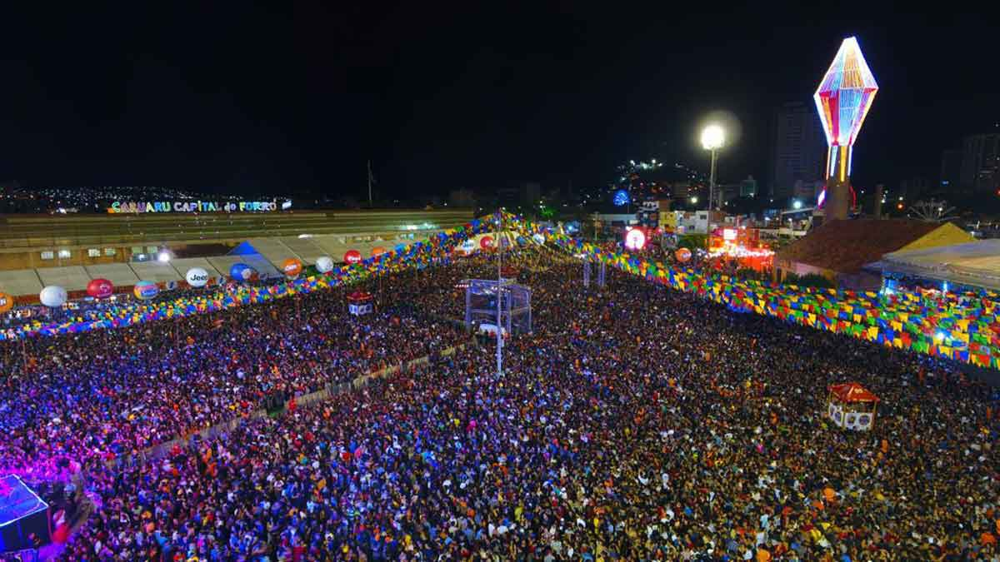

O São João
Em Arcoverde, a comemoração ganhou força no antigo povoado de Olho d'Água (embrião da cidade), com
reuniões em terreiros, fogueiras e cantorias que celebravam São João Batista.
Com a expansão da cidade e o crescimento do turismo no interior pernambucano, a Prefeitura passou a
estruturar o festejo de forma profissional a partir dos anos 1990, priorizando a valorização do
autêntico forró e das manifestações locais.
O evento se destaca por descentralizar os festejos, dividindo a cidade em diversos polos. Exemplos
marcantes são o Polo Raízes do Coco Lula Calixto (preservando o samba de coco tradicional), o Polo Pé de
Serra João Silva e o Polo da Poesia Elizeu Pereira